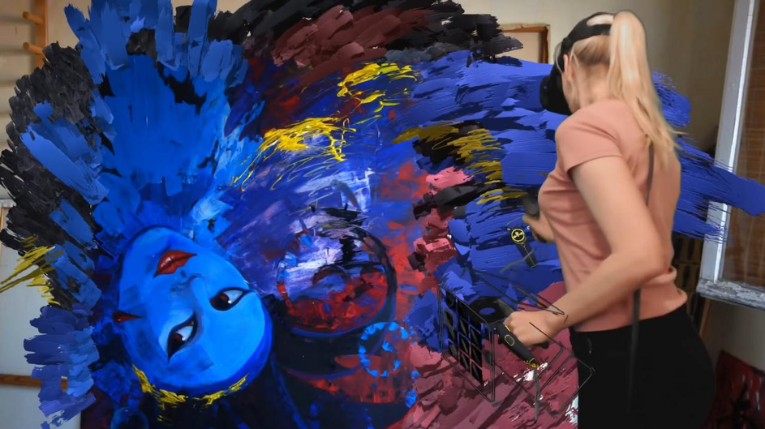
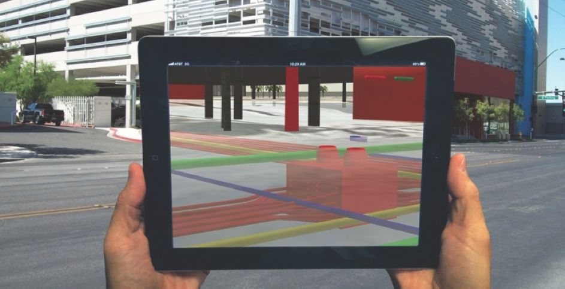
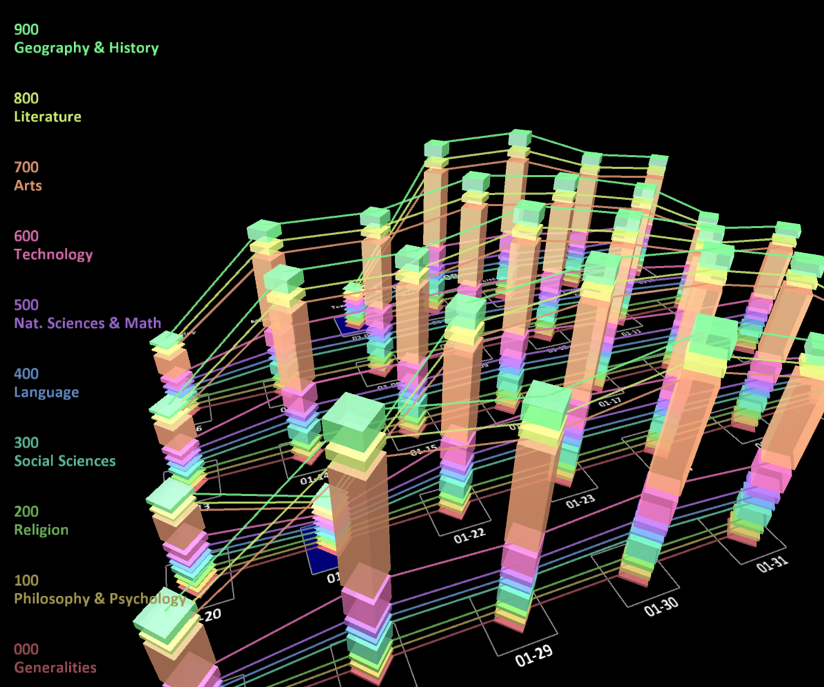

AR & VR
Virtual reality is een virtuele wereld gestimuleert door een computer waarbij de gebruiker door zijn zintuigen gestimuleert wordt. Augmented reality maakt gebruik van de camera om door het scherm een digitale simulatie te tonen, gebaseerd op de realiteit.
Assignment
Bedenk 3 concepten gerelateerd aan augmented reality of virtual reality voor de volgende onderwerpen:
Art
Voor kunst heb ik een concept in gedacht waarbij kunstwerken in 3D worden uitgewerkt, waardoor je zogezegd letterlijk in het frame kan stappen en het werk van alle kanten kunt bekijken. Het doel erachter is een complete beleving te leveren aan de gebruiker, door de gebruiker te omringen in een digitale omgeving. Dit zou dan mogelijk kunnen zijn met Virtual Reality (VR), in combinatie met beeld, geluid. Wat ook een optie zou kunnen zijn is de ruimte gebruiken, zodat de virtuele wereld op maat gemaakt kan worden volgens de afmetingen van de realiteit. Op deze manier kan je een hele tentoonstelling laten zien, zonder een werk te plaatsen in de ruimte. Het enige wat je dan nodig hebt is een VR-headset en de ruimte zelf.
Construction
Mijn idee hierbij was om in Augmented Reality (AR) te reflecteren hoe een constructie eruit komt te zien en hoe het dan gebouwd kan worden. Via je mobiel zie je dan een preview hoe het eindresultaat eruitzien en daarnaast geeft hij per stap aan wat er gedaan moet worden. Op deze manier kan je live meedoen met het bouwen van bijvoorbeeld een miniatuur huis en kan je het eindresultaat met elkaar vergelijken. Enige nadelen kan het gebruik zijn. Bijvoorbeeld, je kan niet tegelijkertijd je mobiel vasthouden en bouwen aan het model.
Education
Voor educatie had ik in gedachte om informatie op een nieuwe manier te kunnen visualiseren. In plaats van 2D tekeningen, grafieken en informatie, leek het mij meer interessanter door de 3D ruimte. Kaarten kunnen op een 3D map gevisualiseerd worden en grafieken kunnen meerdere dimensies aannemen. Informatie kan je nu dus meer indelen zoals het in je hoofd is gevisualiseerd en ingedeeld, zoals een iemand onthoudt alles in kasten en laadjes die gelabeld zijn of een ander wilt alles graag in een overzicht hebben op 1 groot dashboard.
Research
Quill is een game ontwikkeld door Facebook waarin illustraties en animaties gemaakt kunnen worden door middel van een VR-tool, hierdoor heeft de gebruiker de vrijheid om in 3D te kunnen werken. Wat ik het meest fascinerende vindt van deze tool is de mogelijkheden om in andere 3D dimensies iets te creëren. Het is dan mogelijk om je eigen creativiteit op een andere dimensie toe te passen en om je creatie heen te lopen. Vergeleken met een 2D vlak heeft 3D meer dieptes waarin details op toegepast kunnen worden. Deze game kan door 1 persoon gespeelt worden en maakt daarnaast ook nog gebruik van controlers die met beide handen apart wordt bestuurd, want dit bestuurt de handelingen in de virtuele wereld.
Reflect
What did you think of this topic?
Het interessante aan virtual reality vind ik hoe de zintuigen worden gebruikt om een nieuwe ervaring en beleving te leveren aan de gebruiker. Door de zintuigen te gebruiken als input en dit terug te laten komen in een game, zorgt voor een niveau van immersiveness vergeleken met games die vanaf een scherm worden gespeelt. Augemented reality heeft ook veel mogelijkheden, maar mist het niveau van immersiveness vergeleken met VR. Wat het wel heeft is de mogelijkheid om de ervaring te delen met andere, wat VR net weer mist.
How do you see applications and the future of this?
In de toekomst zie ik dat AR verder is ontwikkeld vergeleken met VR. Hetgene wat we dagelijks zien is de realiteit en door AR hier in te mixen krijg je mogelijk apparaten en/of diensten die je door middel van een bril kunnen laten zien wat je hiervoor eerst zag op je mobiel. Je doet dan de bril op en ziet in je ooghoek het weer en de planning van vandaag. Later de dag heb je dan een meeting met een klant van een ander continent door middel van holografische projectie, wat verder is ontwikkeld vanuit AR. VR is mogelijk zover ontwikkeld dat het bewustzijn van een persoon word gebruikt om de virtuele wereld te ontdekken, in vergelijking met de zintuigen.
Did the subject meet your expectations?
Voor mijn gevoel loopt de technologie voor AR en VR nog achter in vergelijking met de visies die ik heb over het gebruik ervan. Wel is er vooruitgang in bijvoorbeeld AR, waarbij er een bril is ontwikkeld vergelijkbaar met de Google Lens maar dan meer stylish. VR kan voor mijn gevoel een stap verder, maar de technologie is daar nog niet en dat ligt niet alleen bij de technologie van VR. Het was interessant om te zien wat er nu qua voortgang is op deze gebieden en het lijkt mij interessant om te zien hoe ver het komt.